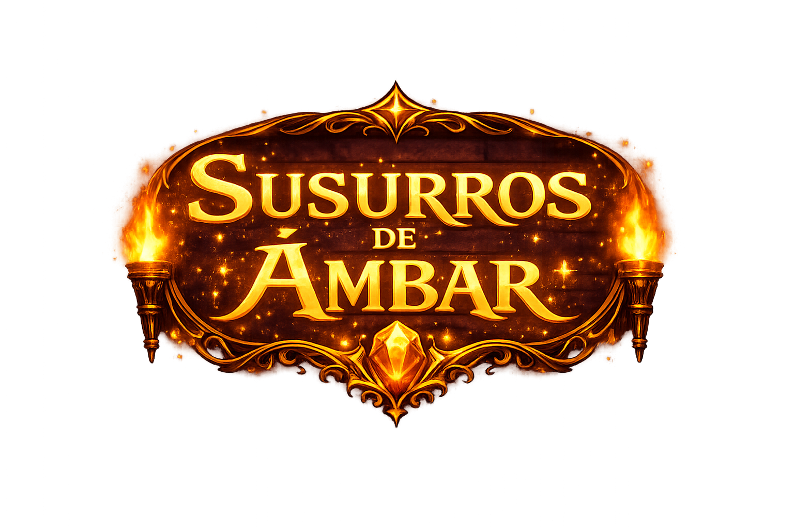
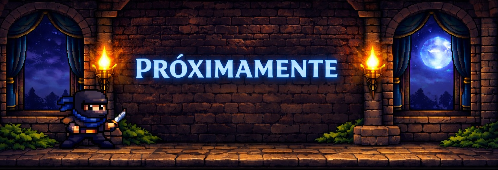
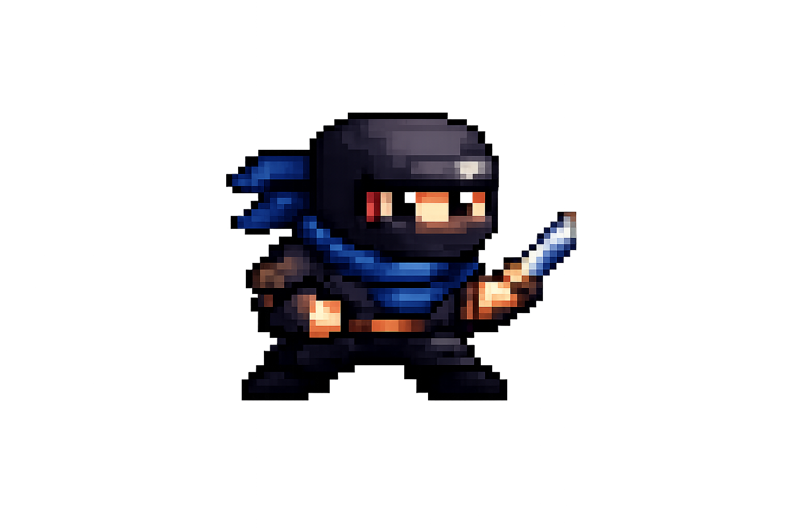
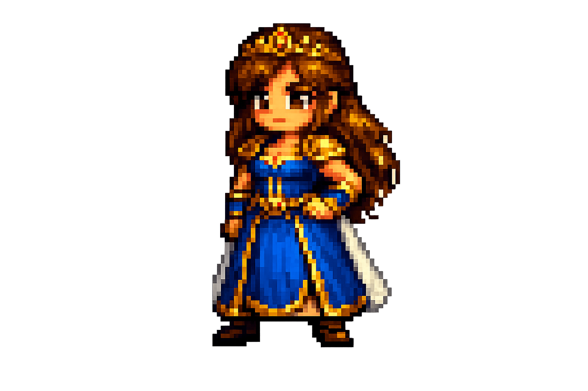

Una aventura épica en un universo lleno de desafíos

En un reino oculto entre las sombras del tiempo, existe un ninja legendario conocido como Kuro, un guerrero silencioso capaz de atravesar portales entre mundos. Su misión no es solo encontrar tesoros, sino descubrir los fragmentos perdidos de un antiguo poder que mantienen el equilibrio del multiverso. Cada mundo que visita es distinto y peligroso: Bosques encantados llenos de criaturas que hablan en acertijos. Ruinas flotantes donde el suelo desaparece bajo sus pies. Ciudades mecánicas gobernadas por máquinas que desafían su ingenio. Templos olvidados protegidos por trampas imposibles. Kuro no solo lucha; piensa, observa y resuelve desafíos que ponen a prueba su mente tanto como su habilidad. Cada tesoro que encuentra no es oro común, sino una pieza clave que revela un secreto mayor: alguien está manipulando los mundos desde las sombras. A medida que avanza, Kuro descubre que no es un simple viajero. Es el último heredero de un linaje destinado a restaurar la armonía entre los mundos antes de que colapsen uno por uno. Su viaje no es solo por tesoros. Es por verdad, equilibrio y destino.

Descripción breve del personaje, habilidades y rol en la historia.

Descripción breve del personaje, habilidades y rol en la historia.
El mundo del videojuego está ambientado en un universo donde la tecnología y la magia coexisten. Los jugadores explorarán regiones diversas, cada una con su historia y secretos.
Puedes acceder a la demo jugable en el siguiente enlace:
Jugar Demo
Semana 1: Análisis UX/UI y creación del mapa mental.
Semana 2: Diseño visual y estructura del sitio web.
Semana 3: Integración de contenido, demo y multimedia.
Semana 4: Pruebas de usuario y ajustes finales.